← Índice de los 69 tutes de IDA
Tute 52 · Estructuras de kernel
se conecta con: Fuera de alcance
INTRODUCCION AL REVERSING CON IDA PRO DESDE CERO PARTE 52 KERNEL
MAS KERNEL
Seguiremos con esta tercera parte de kernel y antes de ir directo a la explotación reversearemos y entenderemos ciertas estructuras y funcionamientos que despues nos serán mas familiares cuando las veamos en drivers mas complejos.
En este caso crearemos un driver que no solo se cargara y descargara como antes sino que se podrá desde un programa en modo user, enviarle ciertos argumentos para interactuar con el.
Para recibir información desde modo user, debemos enseñarle a nuestro driver a responder a los códigos de control de entrada y salida del dispositivo (IOCTL) que se le pueden suministrar desde el modo de usuario utilizando la API de DeviceIoControl. Ya hemos visto cómo nuestro driver puede cambiar la rutina de descarga, usando la estructura DRIVER_OBJECT y modificando el puntero que allí se guarda. Manejar IOCTLs es muy similar, solo tenemos que proporcionar un par de rutinas mas.
IOCTL
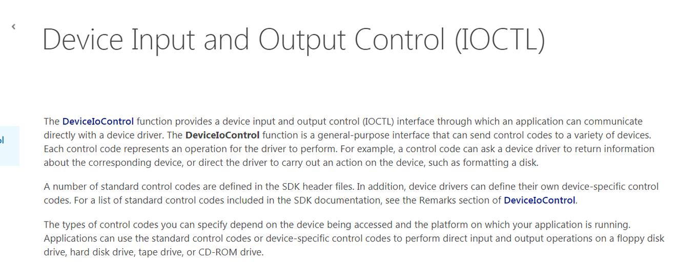
Lo primero que debemos hacer en nuestro punto de entrada sera crear un DEVICE OBJECT.
DEVICE OBJECT
No voy a explicar toda la teoría sobre esto el que quiere profundizar léase:
https://docs.microsoft.com/en-us/windows-hardware/drivers/kernel/introduction-to-device-objects
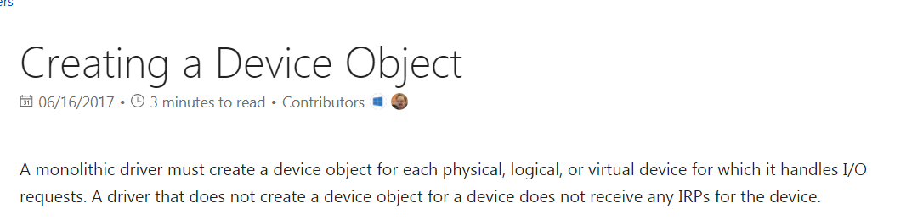
Y esto debe ser asi, en nuestro primer driver solo lo podíamos arrancar y parar y no podía recibir comandos de control desde user, por eso ahora debemos crear el DEVICE OBJECT usando la api IoCreateDevice.
En el código fuente eso esta aquí dentro de la función DriverEntry
status = IoCreateDevice(DriverObject,
0,
&deviceNameUnicodeString,
FILE_DEVICE_HELLOWORLD,
0,
TRUE,
&interfaceDevice);
--------------------------------------------------------------------------------------------------------------------------------
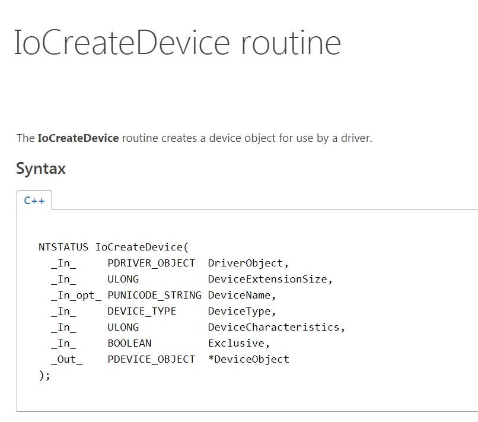
Parameters
DriverObject [in]
Pointer to the driver object for the caller. Each driver receives a pointer to its driver object in a parameter to its DriverEntry routine.
NTSTATUS DriverEntry(
PDRIVER_OBJECT DriverObject,
PUNICODE_STRING RegistryPath)
{
Como hablamos visto DriverEntry recibía dos argumentos, el primero es un puntero a la estructura DRIVER OBJECT ese se pasa como primer argumento de IoCreateDevice.
DeviceName [in, optional]
Optionally points to a buffer containing a null-terminated Unicode string that names the device object.
WCHAR deviceNameBuffer[] = L"\\Device\\HelloWorld";
UNICODE_STRING deviceNameUnicodeString;
En nuestro código corresponde al nombre del device y luego se copia a deviceNameUnicodeString que se pasa como argumento de la api.
DeviceType [in]
Specifies one of the system-defined FILE_DEVICE_XXX constants that indicate the type of device (such as FILE_DEVICE_DISK or FILE_DEVICE_KEYBOARD) or a vendor-defined value for a new type of device.
En nuestro caso es un valor definido por nosotros al inicio del código.
#define FILE_DEVICE_HELLOWORLD 0x00008337
DeviceObject [out]
Pointer to a variable that receives a pointer to the newly created DEVICE_OBJECT structure. The DEVICE_OBJECT structure is allocated from nonpaged pool.
Es un puntero a un dword donde la api guardara un puntero allí, por eso dice OUT es para salida de la misma api.
Esos son los mas importantes, veamos ahora un poco el código en IDA, ahora que conocemos esta api.
Vemos que la función que llama a nuestro DriverEntry es similar
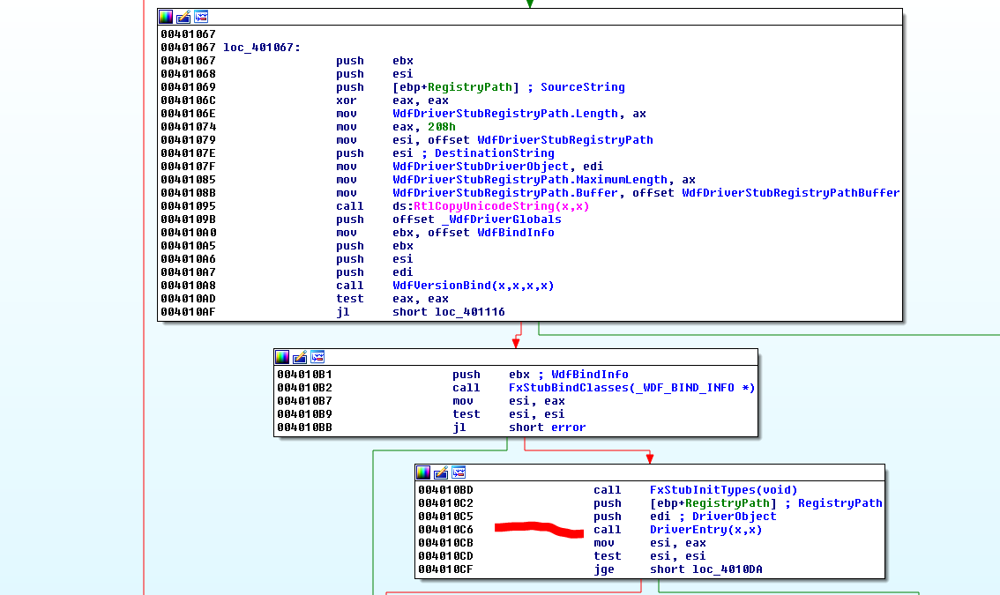
Veamos la parte de nuestro código.
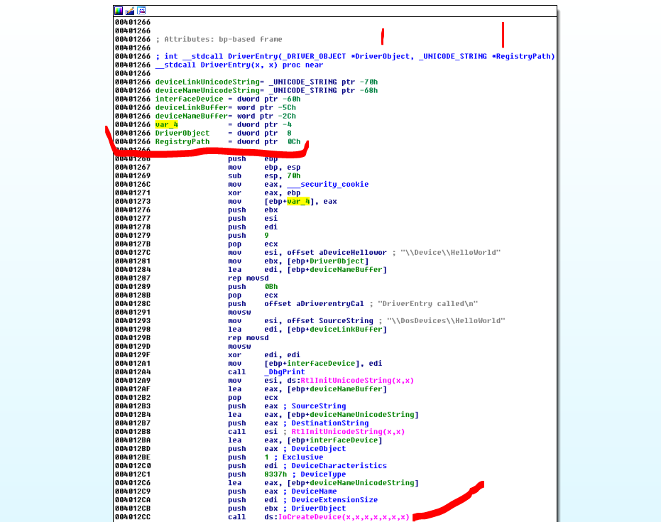
Allí empieza tiene los dos mismos punteros a estructuras del tipo _DRIVER_OBJECT y _UNICODE_STRING.
Los demás son variables, como tenemos símbolos en este caso no es muy difícil, pero es bueno irse acostumbrandose de a poco para los casos reales donde no tengamos símbolos.
Vemos que en var_4 guarda la COOKIE de protección del stack.
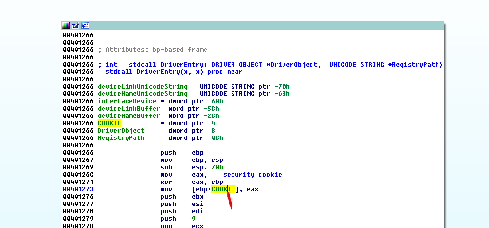
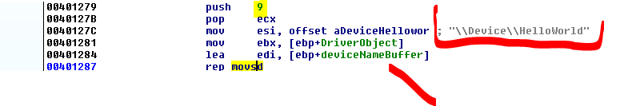
Allí copia el device name unicode con un size de 9 dwords (0x24 bytes) al destination que es deviceNameBuffer, cuyo largo es 19 words o sea 19 por 2, en total 38 bytes decimal 0x26 bytes hexa, asi que todo bien lo que copiara es menor al buffer.
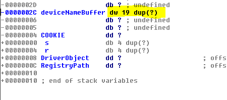
Python>hex(0x19*2)
0x32

Luego copia el DOS_DEVICE_NAME copiara 0xb dwords o sea 0xb *4 es 0x2c bytes hexa en total
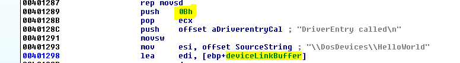
Y el buffer de destino es deviceLinkBuffer veamos su largo.
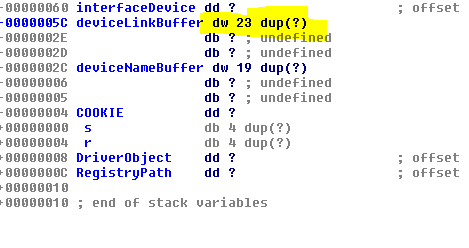
Es 23 decimal por 2 o sea 46 bytes o sea 0x2e hexa, asi que tampoco hay overflow aquí.
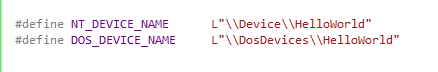
La cuestión es que en deviceNameBuffer esta el device name y en deviceLinkBuffer esta el Dos device name.
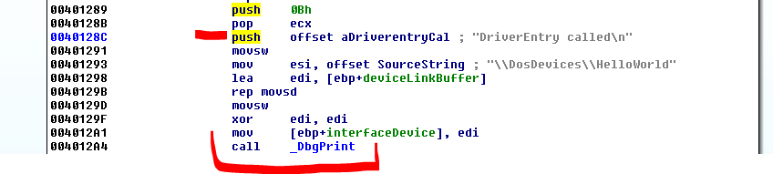
Luego esta el DbgPrint que imprime el mensaje “DriverEntry called”
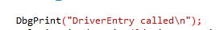
Sigamos lo siguiente sera transformar una string unicode en una que sea del tipo _UNICODE_STRING, eso lo hará la api RtlInitUnicodeString.
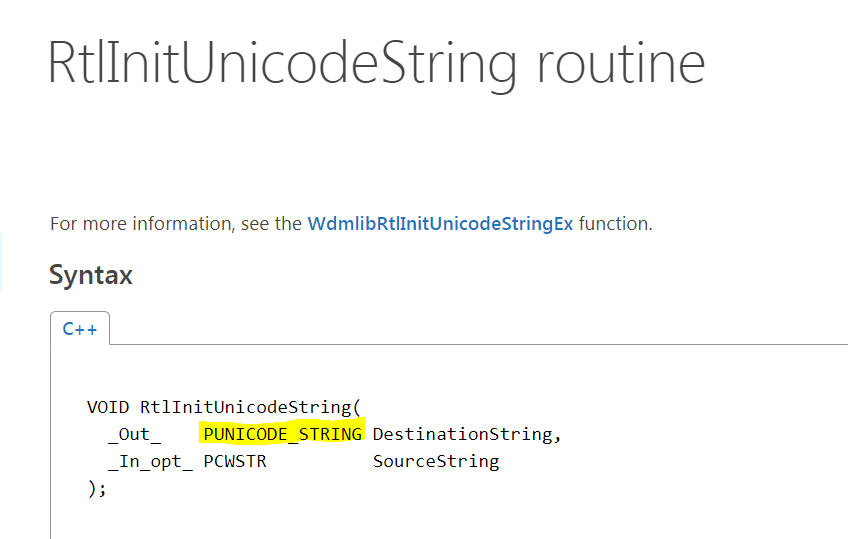
Tenemos una llamada a RtlInitUnicodeString
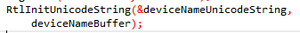
WCHAR deviceNameBuffer[] = L"\\Device\\HelloWorld";
El source deviceNameBuffer es un puntero a un buffer que tiene una string unicode y el destination es un puntero a una estructura UNICODE_STRING .
Esta estructura ya la habíamos visto tiene tres campos dos words (lenght y MaximumLenght) y el tercero debe ser un puntero a la string unicode.
Quiere decir que la api copiara la dirección de ese buffer source en el tercer campo de la estructura, le agregara el lenght y MaximumLenght en los campos correspondientes y con eso habra transformado un buffer común con una string unicode en una estructura _UNICODE_STRING.
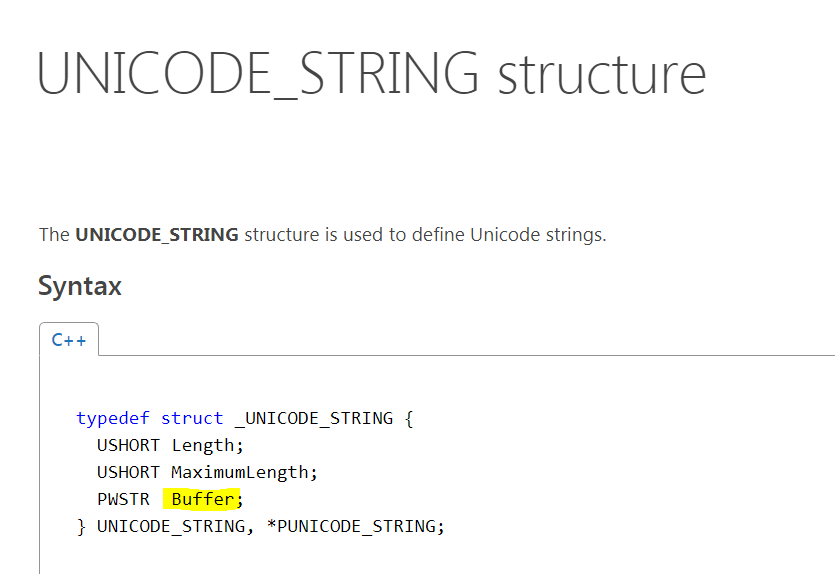
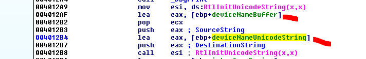
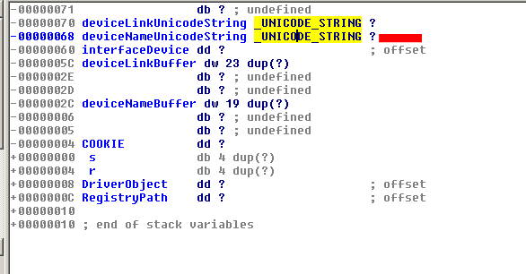
Es una estructura del tipo UNICODE_STRING con 8 bytes de largo ya que son dos words para los lenghts y un dword para copiar allí el puntero al buffer con la string unicode,
Luego esta la llamada a la api que habíamos hablado IoCreateDevice.
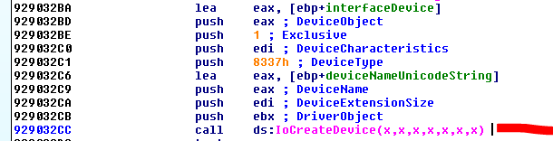
Habíamos visto que el argumento mas lejano o sea el ultimo era un puntero a un dword que se usaba como salida para que la api guarde allí un puntero, vemos eso pone a cero la variable interfaceDevice y luego con lea halla el puntero a esa variable donde escribirá un puntero.
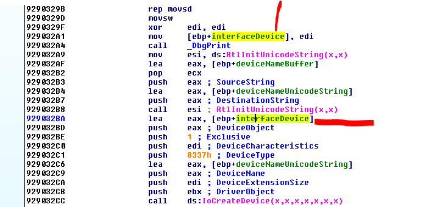
Luego hay un PUSH 1 que es el argumento Exclusive que no lo vimos antes porque no es de gran importancia, luego viene PUSH EDI, vemos que en EDI hay un cero ya que había un XOR EDI, EDI antes.
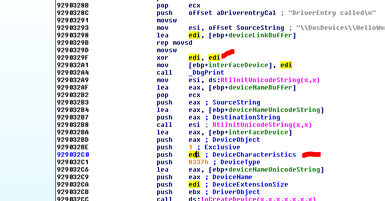
No es tampoco muy importante, luego viene push 8337h que es el DeviceType que habíamos definido en el código fuente
#define FILE_DEVICE_HELLOWORLD 0x00008337
Luego viene el puntero a la estructura con la _UNICODE_STRING con el deviceName
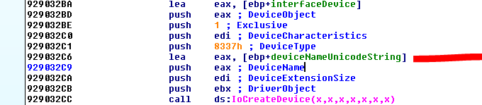
Luego otro PUSH EDI que es cero de DeviceExtensionSize y al final en EBX esta el puntero a DriverObject.
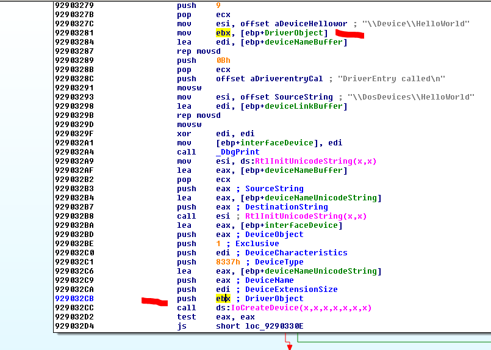
_DRIVER_OBJECT
Recordamos que eso era un puntero a la estructura _DRIVER_OBJECT.
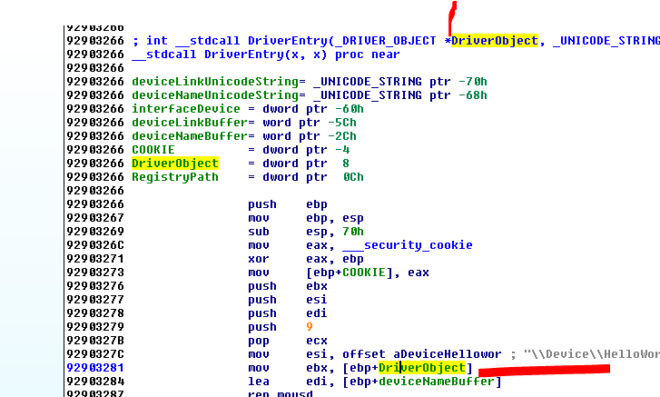
Bueno al salir de la api se habrá creado el DeviceObject.
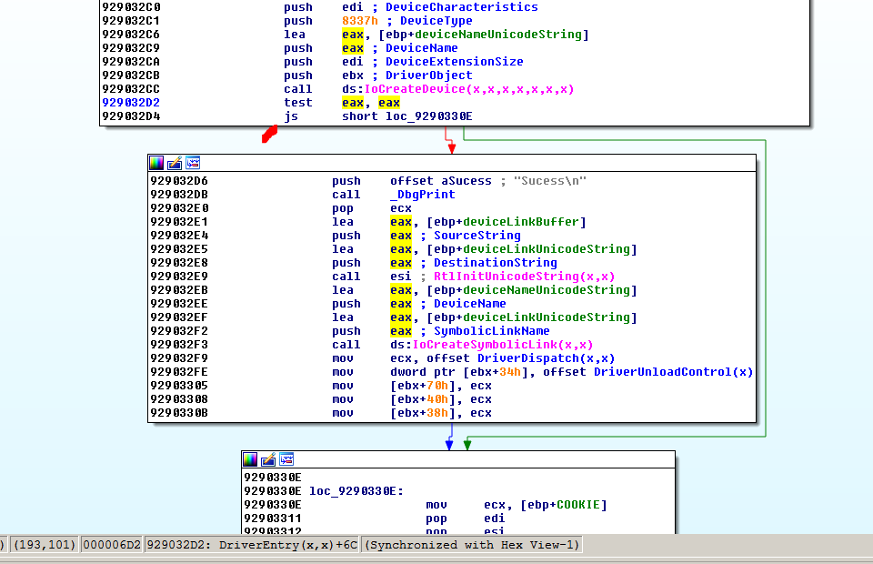
Si en EAX tiene un valor negativo habrá fallado y el JS saltara por la flecha verde sino sera correcto y ira al DbgPrint que imprimirá “Sucess”
Luego hará lo mismo con la otra string unicode al convertirla de un buffer con una string unicode a la forma de estructura _UNICODE_STRING al igual que antes con la api RtlInitUnicodeString.
Por lo tanto deviceLinkUnicodeString ahora sera del tipo _UNICODE_STRING y tendrá en su tercer campo un puntero a un buffer con la string unicode L"\\DosDevices\\HelloWorld".
SYMBOLIC LINK
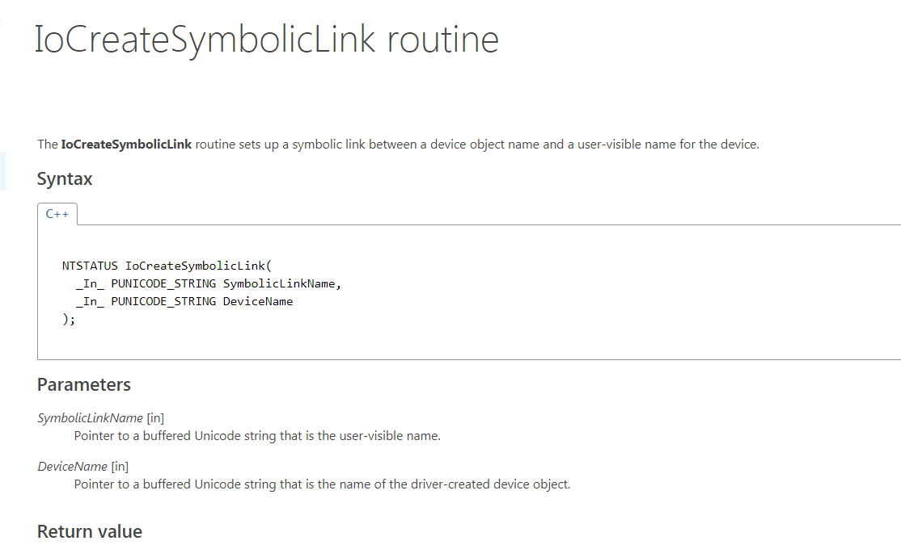
Luego pasando los punteros a las dos _UNICODE_STRING a la api IoCreateSymbolicLink creamos el symbolic link entre el DeviceObject y el modo user.
EBX tenia el puntero a la estructura DRIVER_OBJECT
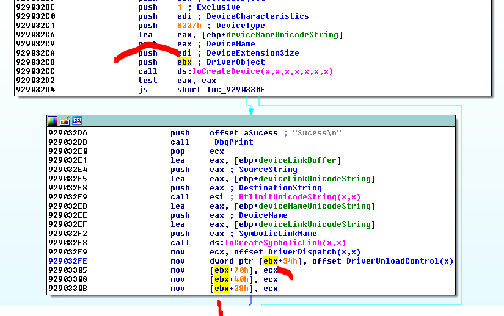
Si no esta en estructuras como antes vamos a LOCAL TYPES y sincronizamos para que aparezca y apretamos T en cada uno de esos campos.
Al igual que en el caso anterior seteamos una rutina custom para cuando se descarga el driver, que esta en ebx+34h, apretando T vemos que es el campo DriverUnload.
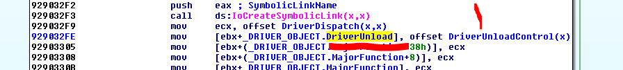
Vemos que la rutina al descargar el driver no solo imprime con DbgPrint la string “Driver unloading”
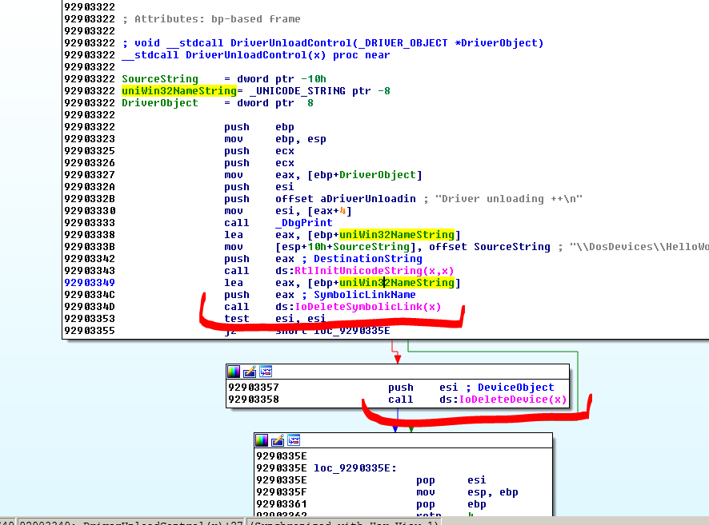
Como antes habíamos creado el symbolicLink con la api IoCreateSymbolicLink al salir tenemos que borrarla con IoDeleteSymbolicLink y también como habíamos usando para crear el DeviceObject con IoCreateDevice ahora se borrara con IoDeleteDevice sino habrá problemas para cargarlo nuevamente.
MajorFunction
Lo ultimo en la función de entrada es el campo MajorFunction que es un array de punteros callbacks (dwords) a diferentes funciones.
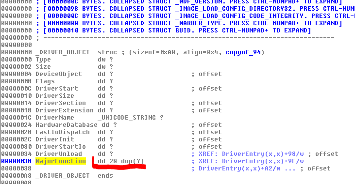
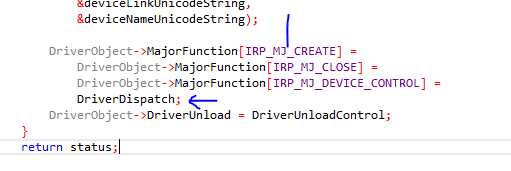
Allí vemos que MajorFuncion [IRP_MJ_CREATE] que es la primera posición del array o sea MajorFuncion [0x0]
Ya que hay una tablita

[IRP_MJ_CREATE] es 0x0
[IRP_MJ_CLOSE] es 0x02
[IRP_MJ_DEVICE_CONTROL] es 0x0e
A los tres campos se los inicializa con la dirección de la función DriverDispatch.
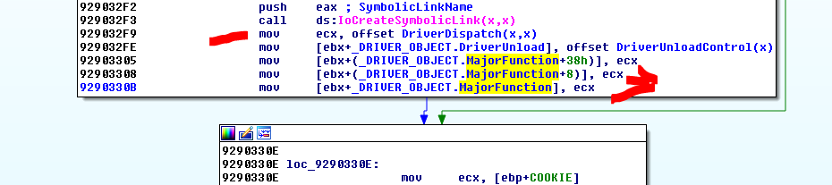
Se escribe en la posición 0x0 ya que [IRP_MJ_CLOSE] es 0x0 por 4 es 0
Luego
[IRP_MJ_CLOSE] es 0x02 por 4 da el byte 8
Y luego
[IRP_MJ_DEVICE_CONTROL] es 0x0e por 4 es 0x38
Así que en los tres escribe el mismo puntero a la misma función.
Vemos que cada uno de esos callbacks se llama en diferentes momentos de la interacción desde un programa en modo user.
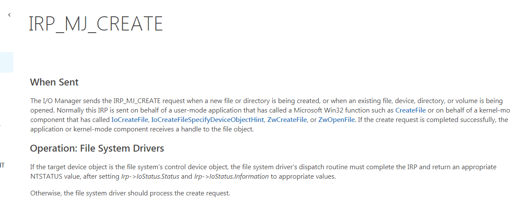
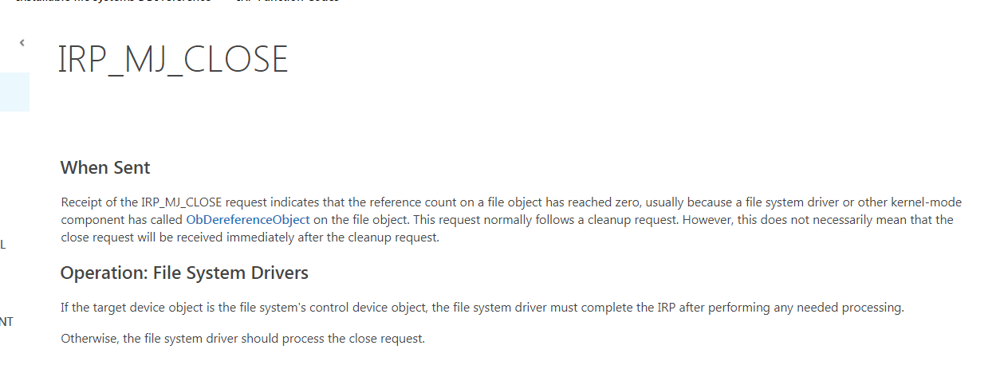
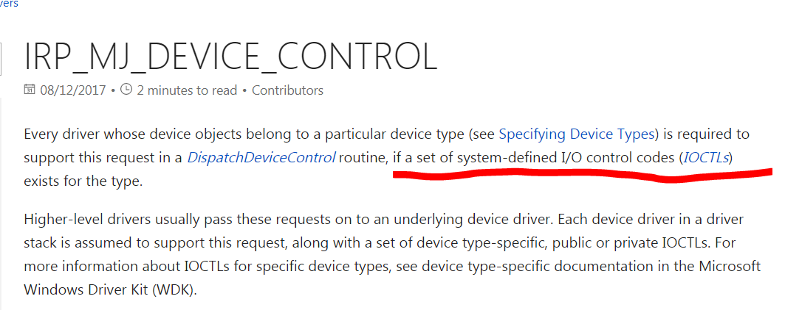
Se ve que cuando llamemos de una aplicación en user mode a través de DeviceIoControl usando un IOCTL se utiliza ese callback, igual en los tres casos va a la misma función ya que los pisamos con punteros a DriverDispatch.
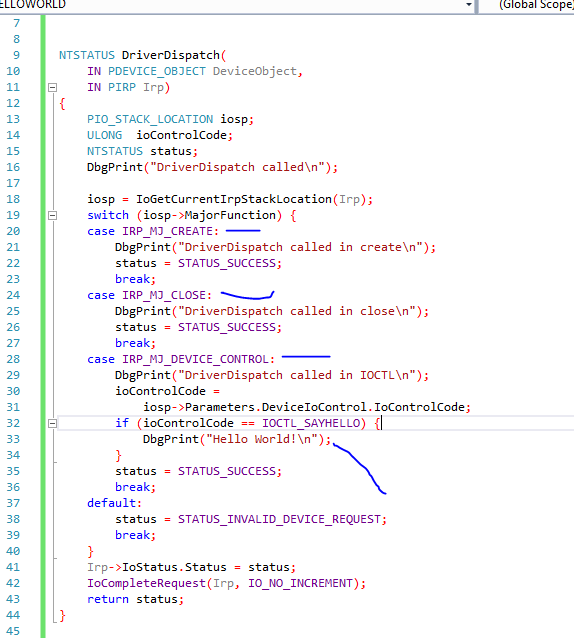
Vemos que la función recibe dos argumentos el famoso puntero a DEVICE_OBJECT y el segundo es un puntero al Irp que es una estructura compleja ya la veremos mejor luego.
IRP
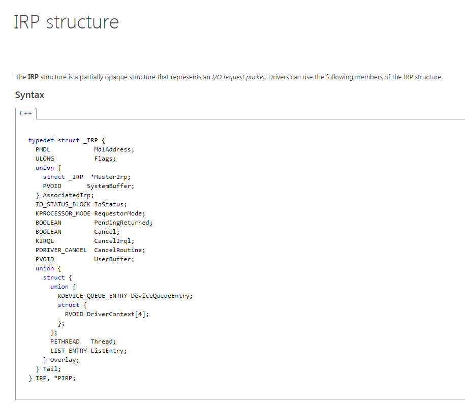
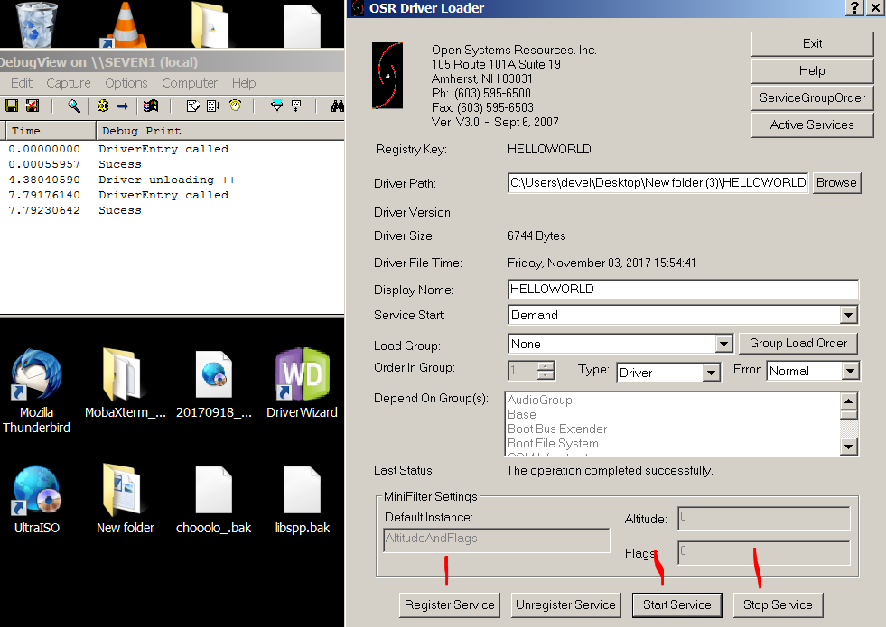
Vemos que al igual que la vez anterior al registrarlo y arrancarlo imprime DriverEntry called y Sucess y al descargar Driver Unloading pero ahora ademas desde una aplicación user que yo hice cuando esta corriendo o sea antes hay que darle a START SERVICE para que corra.
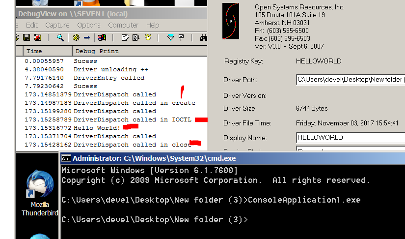
Con las interacciones desde el programa en user mode se llama al dispatch, vemos que mi programita solo hace esto.(el ejecutable estará adjunto)
#include "stdafx.h"
#include <windows.h>
#define FILE_DEVICE_HELLOWORLD 0x00008337
#define IOCTL_SAYHELLO (ULONG) CTL_CODE( FILE_DEVICE_HELLOWORLD, 0x00, METHOD_BUFFERED, FILE_ANY_ACCESS )
int main()
{
HANDLE hDevice;
DWORD nb;
hDevice = CreateFile(TEXT("\\\\.\\HelloWorld"), GENERIC_READ | GENERIC_WRITE, 0, NULL, OPEN_EXISTING, FILE_ATTRIBUTE_NORMAL, NULL);
DeviceIoControl(hDevice, IOCTL_SAYHELLO, NULL, 0, NULL, 0, &nb, NULL);
CloseHandle(hDevice);
return 0;
}
O sea cuando llamo a CreateFile para poder tener un handle del driver salta al dispatch a través del callback [IRP_MJ_CREATE] y imprime
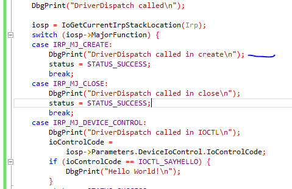
DeviceIoControl
Luego al llamar usando la api DeviceIoControl pasándole el IOCTL
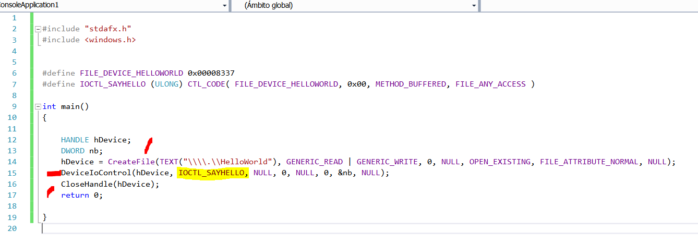
Vemos que usa el callback [IRP_MJ_DEVICE_CONTROL] y luego chequea cual es el IOCTL en este caso IOCTL_SAYHELLO
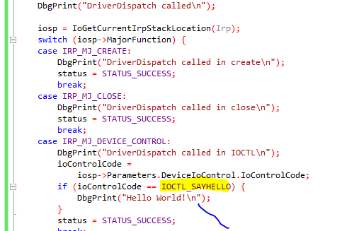
En ese caso imprime “Hello World”
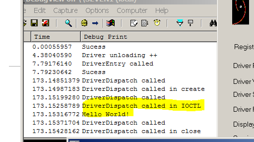
Y el ultimo se llama cuando hago CloseHandle y llama a [IRP_MJ_CLOSE]
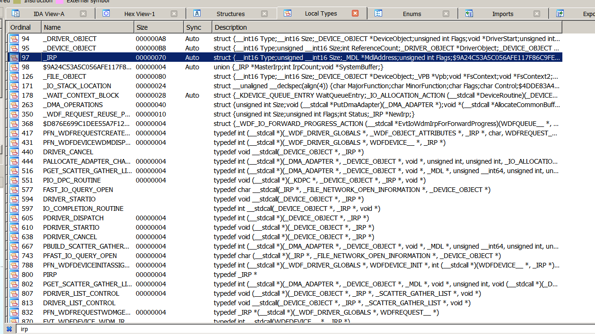
Sincronizo la estructura IRP en LOCAL TYPES
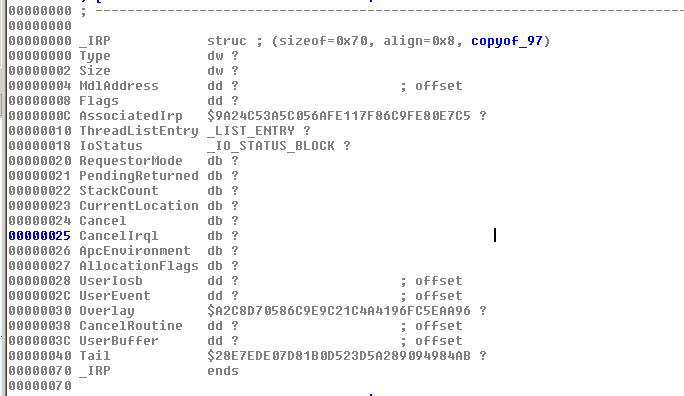
Y puedo ver en la pestaña ESTRUCTURAS la misma.
Vemos que cuando lo tiro debuggeando y pongo Breakpoint en la función dispatch luego de llegar alli
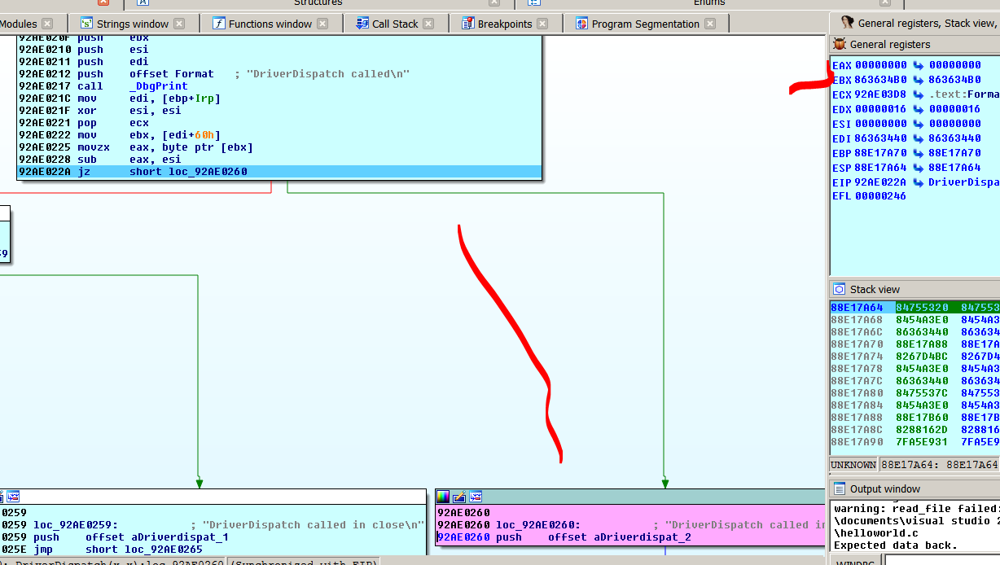
Lee desde la estructura IRP, la parte TAIL no esta especificada en MSDN pero alli, luego de buscar el campo en EDI+60, y pasarlo a EBX , el contenido del mismo va a EAX que tiene la primera vez que para el valor de [IRP_MJ_CREATE] o sea cero, y en este caso va alli a imprimir ese mensaje de que paso por create.
Si le doy RUN nuevamente parara de nuevo con EAX=0e de [IRP_MJ_DEVICE_CONTROL]
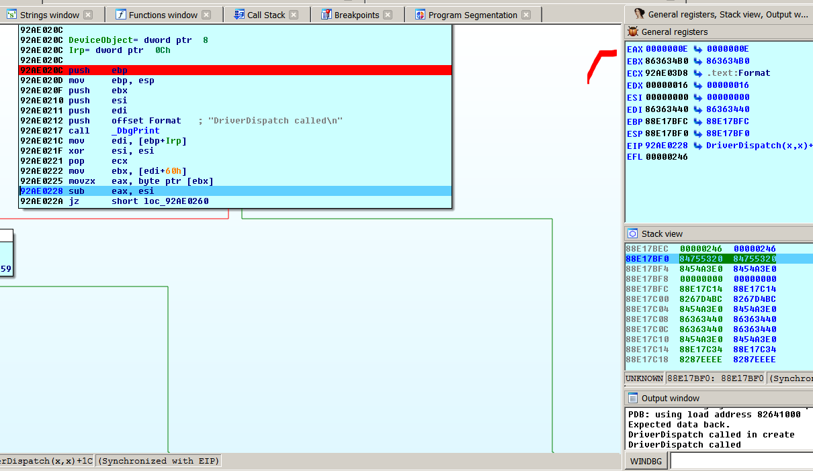
Como EAX es diferente de cero va por aquí
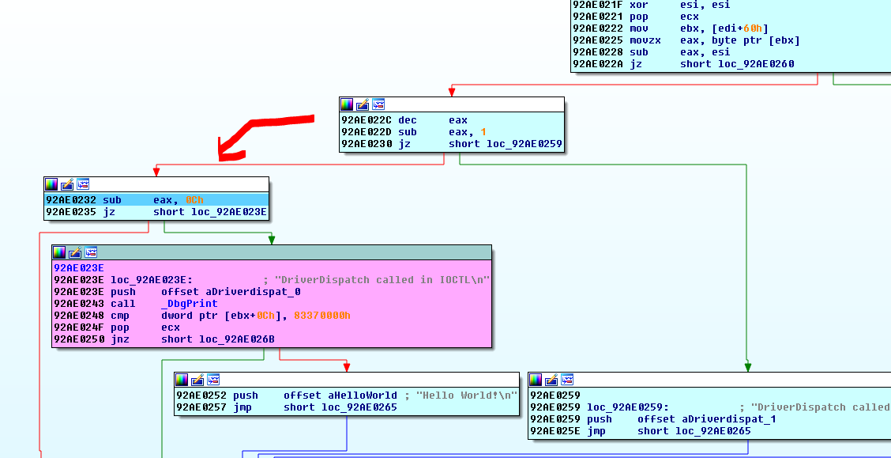
Y en este caso llega al bloque rosado imprime que llego alli por un IOCTL.
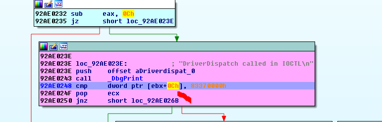
#define IOCTL_SAYHELLO (ULONG) CTL_CODE( FILE_DEVICE_HELLOWORLD, 0x00, METHOD_BUFFERED, FILE_ANY_ACCESS )
En el código el IOCTL code que se obtiene desde el 0x8337 del FILE_DEVICE se le realizan varias operaciones según el tipo de IOCTL( en este caso METHOD BUFFERED, etc etc) lo cual nos da el IOCTL 83370000.
Alli lo compara y como es ese, va e imprime el cartel de “Hello World!”
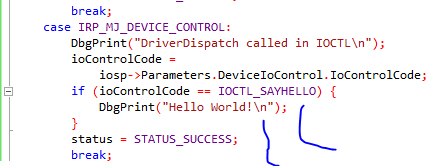
Cuando pasamos por el DebugPrint nos muestra en la barra del Windbg el mensaje, si hubiera varios IOCTL con diferentes acciones habría un switch aquí justamente para que desvié la ejecución según el que sea.
La tercera vez que para es cuando hacemos CloseHandle EAX es 2.
Y imprime
Creo que con esto tenemos una buena introducción al tema, seguiremos en la siguiente parte, profundizando mas.
Hasta la parte siguiente
Ricardo Narvaja